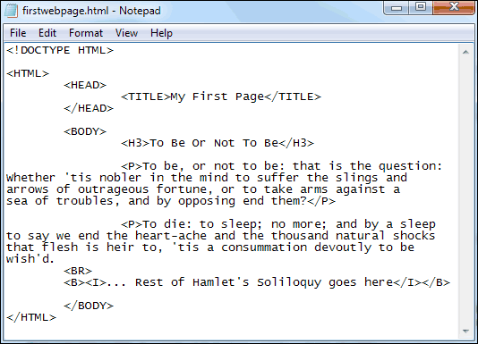
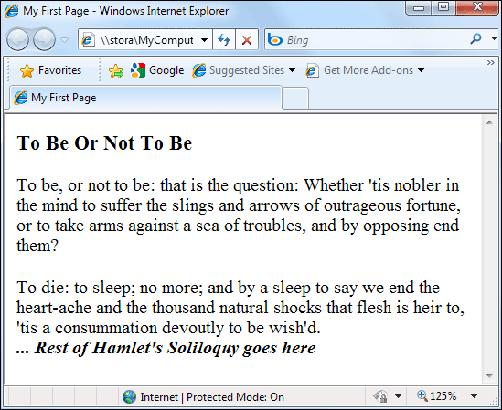

Bold and Italics
Two more tags that come in useful are the Bold and Italic tags. They are quite easy to use. Here are the Bold tags:
<B> </B>
And here are the Italic tags:<i> </i>
The text you want to change goes between the two tags:
<B> ... Rest of Hamlet's Soliloquy goes here</B>
<i> ... Rest of Hamlet's Soliloquy goes here</i>
If you want Bold and Italic text then you can nest the two:
<B><i> ... Rest of Hamlet's Soliloquy goes here</i></B>
The two I tags go between the two B tags. You can have it the other way around, though, with the I tags first:
<i><B> ... Rest of Hamlet's Soliloquy goes here</B></i>
Be careful of this, however:
<i><B> ... Rest of Hamlet's Soliloquy goes here</i></B>
This is a mismatched pair of tags. The two tags on the inside are B and I, and the ones on the outside are I and B. A modern browser will probably correct the mismatch, but older ones may not.
Try it in your HTML code:

Save and view the results in your browser:

There is also an underline tag you can use:<U> ... Rest of Hamlet's Soliloquy goes here</U>
You can nest all three tags: bold, italics, and underline:
<U><B><i> ... Rest of Hamlet's Soliloquy goes here</i></B></U>
All this nested HTML code can be a bit messy, however. The modern solution is to use something called a Cascading Stylesheet. Using a Stylesheet allows you to do all your text formatting in the HEAD section, or better yet in an external file. (You’ll see how to do all this shortly.)
In the next lesson, we'll take a look at HTML lists.